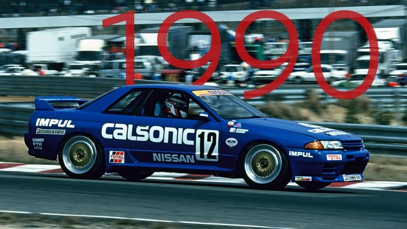

Prestasi NISMO
1936
Hanya di tahun kedua Nissan Motor Company, gairah untuk motorsport terlihat jelas. Pada trek oval 1.200 meter di dekat Tokyo, mesin supercharged baru Datsun NL75 membantu pembalap menang melawan mobil asing lain yang jauh lebih besar, memulai legenda "Pembunuh Raksasa". Ini juga memulai tradisi mengambil pelajaran dari balap, dan membawanya ke kendaraan jalanan kami.

1958
MENAKLUKKAN TANTANGAN 19 HARI, ORANG LAIN TIDAK BISA BERTAHAN
Memerangi jalan yang buruk, banjir, dan suhu ekstrem, Nissan semakin mengukuhkan reputasinya untuk ketahanan dengan menyelesaikan pertama di kelasnya di "The World's Cruelest Rally" di sekitar benua Australia. Setengah dari peserta tidak menyelesaikan kursus 16.600 km - dianggap sangat parah, tidak pernah digunakan lagi.
1990
KEMBALINYA SANG RAJASetelah membawa GT-R kembali pada tahun 1989, ia kembali ke motorsport dengan balas dendam, menjilat semua pesaing untuk memenangkan balapan pertamanya pada tahun 1990. Ini menjadi salah satu pembalap paling dominan yang pernah ada di Kejuaraan Mobil Touring Seluruh Jepang, dengan yang belum pernah terjadi sebelumnya. 29 kemenangan beruntun di tahun 1993. Di Australia, GT-R memenangkan gelar untuk tahun 1991 dan 1992, dan mendapat julukan "Godzilla"x.